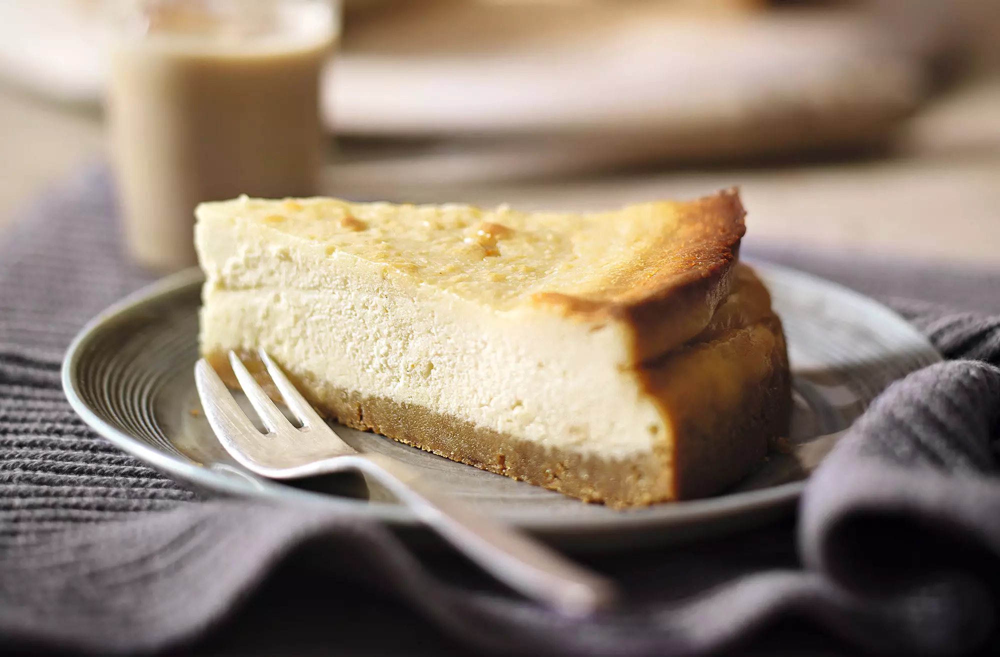

200g stem ginger cookies
45g butter (melted)
600g creamy soft cheese
170ml double cream
150g golden caster sugar
2 tbsp cornflour
5 tbsp Bailey's Irish Cream
100g white chocolate
3 eggs
Get out all ingredients and preheat the oven to 180ºC. Prep the deep 23cm, non-stick cake tin and wrap it in foil for the water bath.
Mix together the crushed cookies and butter, stirring until evenly mixed. Tip the crumb mixture into the tin, pressing the crumbs down firmly with the back of a spoon. Place in the fridge for 5 minutes
Mix all the ingredients at room temperature. Place the soft cheese, cream, sugar and cornflour in a large bowl and beat with a K-Beater until smooth. Add the Baileys and eggs and whisk briefly until blended. Pour into the prepared tin and place in a water bath. Scatter over the white chocolate and cook for 50 minutes until dark golden - it might still be a little wobbly in the centre but will set as it cools
Turn off the oven, open the door and leave the cheesecake to cool completely. Chill, preferably overnight, until ready to serve